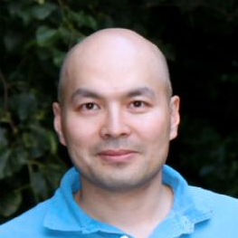

Prof. David A. Weitz -- 哈佛大学工程与应用科学学院教授，微流控、生物材料、生物物理等交叉学科研究领域的知名专家，美国科学院、工程院、艺术与科学院三院院士，英国皇家化学会会士。已发表高水平SCI论文600多篇，其中30余篇发表在Nature，Science，Cell等国际顶级刊物上，论文被引6万余次。 |
|
 |
Prof.Kam Leong -- 美国工程院院士，美国Columbia大学生物医学工程系终身教授，在Nature Medicine, Nature Materials, PNAS等期刊发表300多篇论文，被引用29680 次，已授权专利约50 项，公开专利约30 项。任Biomaterials的主编，并为多个著名期刊如Nano Today, Molecular Therapy, Biomacromolecules等编委。 |
Prof. Michael L. Shuler -- 康奈尔大学生物医学工程教授，康奈尔纳米生物中心主席，微器官芯片的开拓者和领军者，美国工程院、艺术与科学院院士，世界近现代一百位工程师之一，荣获美国化学学会Marvin J. Johnson 奖、Pritzker奖、lush奖等。 |
|
 |
Prof. Janos Vörös -- 苏黎世联邦理工学院信息科学与电气工程系教授，生物传感器与生物电子学领域专家，擅长微阵列生物传感技术及其在诊断和药物筛选中的应用，以及纳米生物技术在神经网络中的应用，曾获RSC P.-G.de Gennes prize 奖。 |
Prof. Ronald Xu -- 俄亥俄州立大学生物医学工程学院副教授，研究领域涉及医疗器械研发和创新、皮肤创面的超光谱成像、多模成像、图像介导治疗和给药等。 |
|
陈洪渊 院士 -- 南京大学化学化工学院教授，中国科学院院士（2001年当选），长期从事电化学分析基础、仿生催化、生物电化学、化学生物学和微全分析系统等领域的研究，主持完成了国家、省部委和国际合作科研项目近40项，发表论文近800篇， H因子为76，曾获国家自然科学二等奖、全国科学大会奖、Nature杰出导师奖等。 |
|
顾忠泽 教授 -- 长江，杰青，东南大学生物科学与医学工程学院院长、国家科技重大专项专家、国务院学位委员会生物医学评议组成员，仿生材料领域专家，曾获教育部自然科学一等奖、日内瓦发明博览会特别金奖等，目前在研器官芯片项目。已发表影响因子10以上论文38篇，他引近7000次，获专利42项，转让7项。 |
|
林炳承 研究员 -- 中国科学院大连化学物理研究所研究员， 德国 Tübingen大学、美国Truman 州立大学、香港大学、意大利科学院客座教授，Lab on a Chip、JBBM 编委，Electrophoresis 副主编，长期从事微流控芯片实验室研究，并以生物医学和药学为主要应用对象。发表论文260余篇，出版专著7部，申请或持有微流控芯片领域发明专利50余项。 |
|
王常勇 研究员 -- 中国人民解放军军事医学科学学院研究员，2011年国家杰出青年科学基金获得者，主要从事组织工程与神经工程等前沿交叉学科方面的研究，是国内组织工程、生物材料相关领域的主要学术带头人之一，在体外构建了工程化心肌、肺脏、肾脏及子宫组织，掌握了一批重要生命器官构建的关键技术。 |
|
|  | 汪大洋 教授 -- 吉林大学化学学院及无机合成与制备化学国家重点实验室教授，中组部国家千人计划专家，英国皇家化学会会士（FRSC）；多年来致力于与固体表面润湿和粘附和水、气、离子和粒子的界面行为相关的基本问题的研究 ，并且积极地将基础科研成果转化为具有商业潜值的新型高效环保治理，保护和修复技术；在截至目前已发表 128余篇高水平的研究论文，其中30%以上发表在化学和材料科学领域顶级杂志上（影响因子> 10），其中Angew. Chem. Int. Ed. 13篇。 |